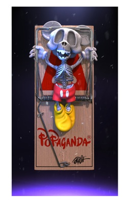

Notes
A Popaganda work revisiting English's Pop Provocateur mode, with a rodent mascot crucified on a mousetrap cross. Bigshot Toyworks identifies American Depress among the Ron English Nifty Gateway NFT works it helped develop.
Popaganda announced the Ron English Essential NFT Collection as an eleven-piece Nifty Gateway release highlighting pivotal images and characters from English's career. Bigshot Toyworks separately documents its role in developing animated NFT works for Ron English's genesis Nifty Gateway drop.
Selected Online References
Popaganda - Ron English Essential NFT Collection archive
NFT Calendar - Ron English Essential NFT Collection listing
Bigshot Toyworks - NFTs for Ron English & Nifty Gateway
Bigshot Toyworks - Ron English NFTs
Nifty Gateway - Ron English collection page / platform notice